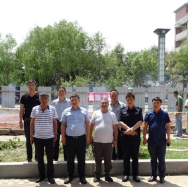
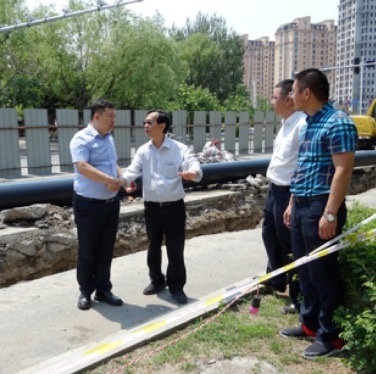
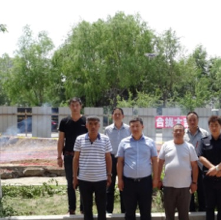

2017年5月23日为全力配合松江避暑城和波塞冬建设运营。我公司新增一条供水主管线。结合实际制定了合理的施工方案，并提前做好设备、材料、人员安排。针对时间紧、任务重的情况，公司调集雄厚的技术力量和施工力量，周密部署。争取6月16日彻底施工完毕恢复路面。在确保工程进度的同时，公司领导多次到现场督查施工情况，要求按规定做好安全防护措施强化安装质量责任意识。经员工加班加点施工工程于6月16日管线对接完工开始供水。工程完工后，彻底解决北京东路处企业以及日后城区建设居民用水量大的问题。



 当前位置: 首页>企业风采
当前位置: 首页>企业风采